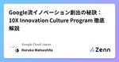

Google Cloud Japanのフィード
https://zenn.dev/p/google_cloud_jp
Google Cloud Japan のエンジニアを中心に情報発信をしている Publication です。Google Cloud サービスの技術情報を中心に公開しています。各記事の内容は個人の意見であり、企業を代表するものではございません。
フィード

GeminiでAppSheetのアプリ作成を手軽に楽しくする方法3選
Google Cloud Japanのフィード
こんにちは、 Google Workspace / AppSheet の Specialist SalesをしているAmyです。今日は Google Cloud Japan Advent Calendar 2024 (Gemini編) 、みなさまいかがお過ごしですか？ 今年は寒暖差が激しいですね。珍しく風邪を引いてガラガラ声で絶賛執筆中です。みなさんもくれぐれも体調に気を付けて、暖かくしてお過ごしくださいね。私は昨年と一昨年、AppSheetについて記事をあげてきました。今日の記事では、 Geminiを活用してAppSheetでのアプリ作成をより手軽に楽しくする方法を3つ紹介します...
4時間前

Gemma2 を GKE 上でいい感じに動かしたい（推論編） 1
1
Google Cloud Japanのフィード
Google Cloud Japan Advent Calendar 2024 の 3 日目（だったはず）の記事です。本記事では、GKE Autopilot 上で Gemma2 をいい感じに動的にスケールするようにホストしてみます。今回は推論のユースケースをメインで扱います。また モデルや推論ライブラリのレイヤーでのチューニングなどは（私の知識が不足しているため）扱わず、あくまでインフラ/ GKE のレイヤーで頑張ります、がもし私の認識が間違っている部分やもっとスマートにできる部分などあれば指摘してくださると喜びます。 tl;drGKE Autopilot はノードの動的スケ...
4日前

Vertex AI Vector Search のハイブリッド検索を日本語で試してみた 1
Google Cloud Japanのフィード
Google Cloud Japan Advent Calendar 2024 6 日目です！こんにちは、カスタマーエンジニアの下門 (しもじょう) です。皆さんは Vertex AI Vector Search に Hybrid Search という機能があるのをご存知でしょうか？簡単に言うと、セマンティック検索とキーワード検索を組み合わせることで、検索精度の向上を図る「ハイブリッド検索」を実現する機能です。キーワード検索は、明確な関連度 (スコア) 計算により結果が解釈しやすく、チューニングも容易ですが、ユーザーの意図や文脈を捉えきれないため、関連性の低い結果が表示されたり、...
4日前

FCM運用のベストプラクティス 1
Google Cloud Japanのフィード
こんにちは、アドベントカレンダー(物理) を買うか悩んで結局今年も買っていない Cloud Support の Rnrn です。皆さんのおすすめがあったら来年こそ参考にするのでぜひ教えてください😀5 日目 の今日はサポートでも時々お問い合わせいただく Firebase Cloud Messaging (FCM) について、運用時どういったことに気をつけると良いかがテーマです。FCM の問題の調査に時間がかかったり、調査が難航する原因の大部分は情報不足です。いざ問題が起きて調べるぞ！となったときに必要な情報が取得できていなかったということのないように、トラブル発生時に向けた備えを中心にご...
5日前

Cookie規制とBigQueryのランデヴーなご関係
Google Cloud Japanのフィード
Google Cloud Champion Innovators Advent Calendar 2024 の 4 日目の記事です。こんにちは。BigQueryに仕事を支えられているふっくです。この一年でブランディングを目指しましたが自分で名乗るのをためらっていたらニックネームが全然浸透しなかったのでどこかで見かけたら呼んでやってください。この記事では、自社techblogで人気の高かったBigQueryに関する記事をピックアップして概要を紹介します。詳細手順などはぜひリンク先記事でご覧ください。弊社ではデジタルマーケティング活動の為のGoogleCloud利活用が活発である為、...
6日前
BigQuery と Gemini で顧客の声を分析しよう 1
Google Cloud Japanのフィード
この記事は Google Cloud Japan Advent Calendar 2024 (Gemini編) の4日目の記事です。Google Cloud Next Tokyo '24 で実施した Gemini in BigQuery のハンズオンセッションの内容を公開します。記事に沿って進めていけば Gemini in BigQuery を簡単にお試しいただくことができます！ 概要このハンズオンは、架空の小売チェーン Next Drug での顧客分析を題材にしています。Next Drug における来店客のアンケートや売上などのデータを BigQuery と Gemini を...
6日前

Google流イノベーション創出の秘訣：10X Innovation Culture Program 徹底解説 1
Google Cloud Japanのフィード
この記事は Google Cloud Japan Advent Calendar 2024 の 4 日目です。こんにちは。 Google Cloud で スタートアップ・SMBの企業向けに新規導入のご支援をしているSales のHarukaです。ついこの間に2024年の新年を迎えた気がしたのですが、もう12月を迎えているなんて・・・時間の加速を感じる今日このごろです。このアドベントカレンダーは Google Cloud を使ってこんなことができるよ、こんな製品があるよ、という Tech 系のご紹介がメインですが、今日は少し角度を変えて、Google のカルチャーについてお話ししてい...
6日前
Geminiへの構造化データの入出力制御 2
Google Cloud Japanのフィード
概要Gemini を用いた少サイズデータを用いたコンテンツ生成に焦点を当て、構造化データ（CSV、JSON など）を効果的に活用する方法をPythonを用いて解説します。Gemini が持つ大規模トークン処理能力のメリットを活かした、より効率的なコンテンツ生成手法を提案します。 序論AI が急速に進化する時代において、大量のデータを分析・活用する能力は極めて重要です。RAG 環境はこうしたタスクに理想的ですが、より少量のデータでコンテンツ生成を行う必要があるシナリオもあります。Gemini は、大量のトークンを処理できるため、有望な解決策を提供します。プロンプトとアップロード...
7日前

Google Cloud MFA必須化に備えよう！今からできる対策とは？
Google Cloud Japanのフィード
皆さん、こんにちは！Google Cloud Japan Advent Calendar 2024 運営です。この記事は Google Cloud Japan Advent Calendar 2024 2 日目の記事です。今年も曲を作成しました。ぜひお聞きください。「MFAを有効化しろ」です。https://www.youtube.com/watch?v=GSgAiA4_4Fk年々、AIの進化はすごいですね。去年と比べてもかなり発音や、曲の構造がそれっぽくなってきた気がします。さて、デジタル化が加速する現代において、セキュリティ対策は企業にとって最重要課題の一つと言えるでしょ...
8日前
Google のソフトウェア開発における生成 AI 活用
Google Cloud Japanのフィード
Google Cloud Japan Advent Calendar 2024 1 日目です！みなさん、生成 AI くんとは仲良くなれていますか？日々一緒に仕事していますか？私にとっては、そしておそらく多くの同僚にとっても、いまや自社の生成 AI である Gemini は完全に仕事のパートナーです。最近ガートナーのハイプ・サイクルにおける生成 AI の位置が少し話題になっていましたが、渦中の弊社においては幻滅しているどころではなく、いまや "生産性の安定期" に入っているとさえ感じます。そんなわけで今日は、Google 社内でも特にソフトウェア開発にフォーカスして、AI 活用に関す...
9日前
BigQuery で始めるベクトル検索 〜 郵便番号検索機能を作ってみよう 〜
Google Cloud Japanのフィード
Google Cloud Champion Innovators Advent Calendar 2024 の 1 日目の記事です。三度の飯より BigQuery が大好き、Mario です。皆さん、そろそろ年末に向けて年賀状の準備を考えてらっしゃるのではないでしょうか？最近は電子年賀状や SNS での挨拶が定番化してきていますが、やはり一手間を感じる心がこもった紙の年賀状をもらえると嬉しいなーと思う派です。（もらえるとは言ってない）でも電子にしろ紙にしろ、ちょっと厄介なのが宛先の住所管理です。住所リストを作成していても、郵便番号がなかったり、逆に住所表記が怪しかったり、加筆修正...
10日前
Google Cloud Japan Advent Calendar 2024
Google Cloud Japanのフィード
Google Cloud Japan のメンバーが書く Advent Calendar 2024 です。去年とは違い、今回は通常版と、主にGeminiに関する内容に限定したGemini特集版の２種類の Advent Calendar を実施いたします！各部門の人達が是非紹介したい機能、いままで培ってきたノウハウ、知っておくと便利な Tips などを公開予定です。記事は毎日更新されていきますが、公開予定記事のトピックのみ最初に公開いたします！ぜひ毎日チェックしていただけると嬉しいです。この Advent Calendar は Google Cloud 製品などに関連するコミュニティ...
12日前
Spannerの運用について
Google Cloud Japanのフィード
はじめにSpannerはマネージドデータベースとして提供されているサービスです。そのためパッチ適用やハードウェアのメンテナンスなど、データベースで日常的に発生する運用面での作業の多くは自動的に実施されます。一方で、データベースの運用という観点ではそれ以外の必要な作業や考慮するべき事項、監視ポイントなどがあります。一般的なリレーショナルデータベース（以下、RDB）と同様の操作もありますが、Spanner特有の概念も存在します。これらについて、RDBとの差分を中心に解説します。理由が明らかな内容についてはその背景となる理由も極力記載しました。 ストレージ ストレージサイズS...
1ヶ月前
「図解即戦力 Google Cloudのしくみと技術がこれ1冊でしっかりわかる教科書［改訂2版］」をより効果的に読むポイント
Google Cloud Japanのフィード
「図解即戦力 Google Cloud のしくみと技術がこれ 1 冊でしっかりわかる教科書」とはGoogle Cloud の基礎知識が学べる「図解即戦力 Google Cloud のしくみと技術がこれ 1 冊でしっかりわかる教科書」が、2024 年 9 月 (電子書籍版は 8 月) に出版されました。こちらの書籍は Google Cloud のパートナーエンジニアと Google Cloud のパートナーである grasys さんの共著となっており、実際に Google Cloud を現場で使用しているプロフェッショナルの視点で初学者・中級者向けに書かれています。そのため、本書は...
1ヶ月前
Google Search でハルシネーションに立ち向かえ！〜 Gemini のグラウンディング機能徹底活用
Google Cloud Japanのフィード
何の話かと言うとGoogle Cloud で提供される基盤モデルの Gemini 1.5 Pro / Flash には、Google 検索や Vertex AI Search と連携するグラウンディング機能があります。この機能の使い方を説明します。 基礎知識の確認大規模言語モデルは、モデルの学習時に得た情報をもとに回答を生成するため、学習時に存在しない情報を必要とする質問には正しく回答できません。この課題を解決する方法として、大きく、ファインチューニングとプロンプトエンジニアリングの 2 つの手法があります。大規模言語モデルの回答品質を向上する方法ファインチューニングは...
2ヶ月前
Backstage でたわむれる on Google Cloud
Google Cloud Japanのフィード
Google Cloud Japan の RyuSA です 👍最近 Backstage という IDP(Internal Developer Portal) が Platform Engineering の文脈で取り上げられることが増えてきています。Backstage はソフトウェアカタログやテンプレートなどをまとめ、開発者向けのポータルサイトを作り上げることができます。Backstage にはデフォルトで備え付けられている様々な機能がありますが、実際に運用するにはむしろその他のプラグインを多く利用することになります。本記事では、Google Cloud を活用して Backstag...
2ヶ月前
Cloud Run のサービスメッシュを試した
Google Cloud Japanのフィード
Cloud Run のサービスメッシュを試した以前から GKE では Cloud Service Mesh を使ってサービスメッシュを利用することができましたが、Cloud Run でもサービスメッシュを利用できるようになりました（作成時点の2024-09-02ではプレビュー段階）。この記事ではサービスメッシュならではの機能をサンプルアプリを使って確認します。 検証シナリオ 検証環境の構成サンプルアプリとして Istio のドキュメントに掲載されている bookinfo（本の情報やレビューが見られる Web アプリで、マイクロサービスで実装されている）のコンテナイメ...
3ヶ月前
Spannerの全文検索を触ってみた
Google Cloud Japanのフィード
はじめにSpannerが全文検索に対応しました[1]。この機能の基本的な使い方をまとめます。実際に使う上では、トークナイザの使い分けが大きな考慮点になるでしょう。 RDBにおける全文検索とはリレーショナルデータベース（以下、RDB）は関係モデルに基づいてデータを格納するデータベースです。関係モデルでは正規化によってデータを編成しますが、この正規化の1つとして「第一正規形」があります。この正規形ではカラムの値がこれ以上分割できない、つまりスカラー値であることを求めます。正規化された値であれば、RDBはインデックスを作ることでカラムの値に対して完全一致検索を効率よく実行できます...
4ヶ月前
Vertex AI で GitHub 公開モデルの API サービスを実現！ 〜 画像セグメンテーション編
Google Cloud Japanのフィード
!2024年8月14日 追記2024年8月13日に公開した際のコード（build/app/main.py）に不備があり、予測処理に GPU が使用されない状態になっていました。現在のコードでは修正済みです。2024年8月17日 追記コンテナのベースイメージを nvidia/cuda:12.6.0-cudnn-runtime-ubuntu22.04 に変更しました。FastAPI のバージョンを fastapi[all]==0.109.1 に変更しました。 何の話かと言うとGitHub で公開されている下記の画像セグメンテーションモデル（SAM 2）を Verte...
4ヶ月前
Cloud Spanner で観測される謎の Lock time を紐解く
Google Cloud Japanのフィード
概要Cloud Spanner をお使いのお客様から、高負荷の状況において、ロック競合が起きるはずがないのにロックが起きるのは何故かというお問い合わせをサポートにいただくことがあります。今回はそのような例と、なぜそれが起こるかについて説明したいと思います。 ロックが発生するコードの例例えば、以下のコードを１つのクライアントから同時実行数 1 で繰り返し実行するとします。直列で１つの read-write トランザクションを実行した後に、次の read-write トランザクションを実行することを繰り返すので、アプリケーションの観点では衝突は発生しません。SingerId=1...
4ヶ月前